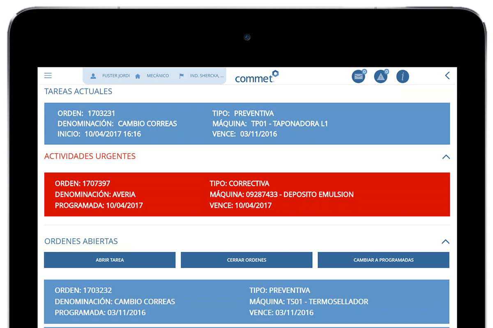

La Gestión de Mantenimiento Asistido por Ordenador (GMAO) es una herramienta gráfica e intuitiva que facilita la gestión de los servicios de mantenimiento de una empresa. Funciona como una base de datos que almacena información sobre la empresa y sus operaciones de mantenimiento, lo que ayuda a realizar las tareas de manera más segura y eficiente. Existen diversos programas de gestión de mantenimiento en el mercado, algunas de sus características son:
- Generación de órdenes de trabajo: permite asignar recursos humanos, reservar material, calcular costos y hacer seguimiento de información relevante sobre la causa del problema, la duración del fallo y recomendaciones para futuras acciones.
- Gestión del mantenimiento preventivo: permite dar seguimiento a las tareas de mantenimiento, crear instrucciones de comprobación, listar los materiales necesarios y otros detalles. Estos programas suelen programar automáticamente los procesos de mantenimiento en base a la lectura de diferentes parámetros.
- Gestión de activos: permite llevar registros de equipos y propiedades de la empresa, incluyendo detalles, información sobre garantías, contratos de servicio, partes de repuesto y otros parámetros relevantes para la gestión. También pueden generar índices de estado de las infraestructuras.
- Control de inventarios: esta función es importante para gestionar partes de repuesto, herramientas y otros materiales, incluyendo la reserva de materiales para trabajos específicos, registros de almacenamiento y previsión de nuevas adquisiciones.
- Gestión de la seguridad: incluye la gestión de permisos y documentación necesarios para cumplir con las normativas de seguridad. Estas especificaciones pueden abarcar accesos restringidos, riesgos eléctricos, aislamiento de productos y materiales, entre otros.
Entre las ventajas de estos programas se encuentran la optimización de recursos humanos y materiales, mejoras en la calidad y productividad de la organización, reducción de tiempos de parada en los elementos productivos, disponibilidad de información actualizada, mejora de los procesos de actuación y ajuste de los planes de mantenimiento a las características reales de la empresa.
